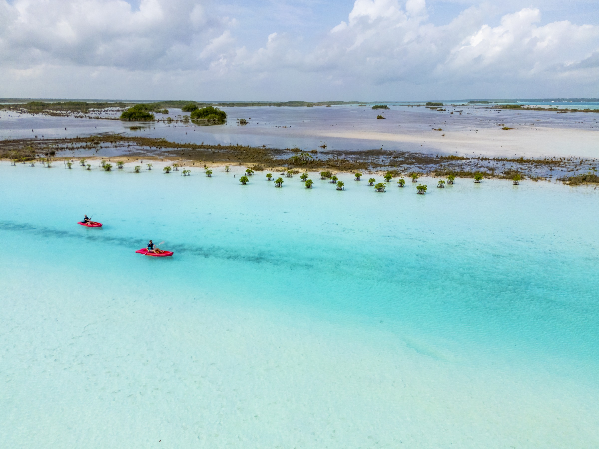
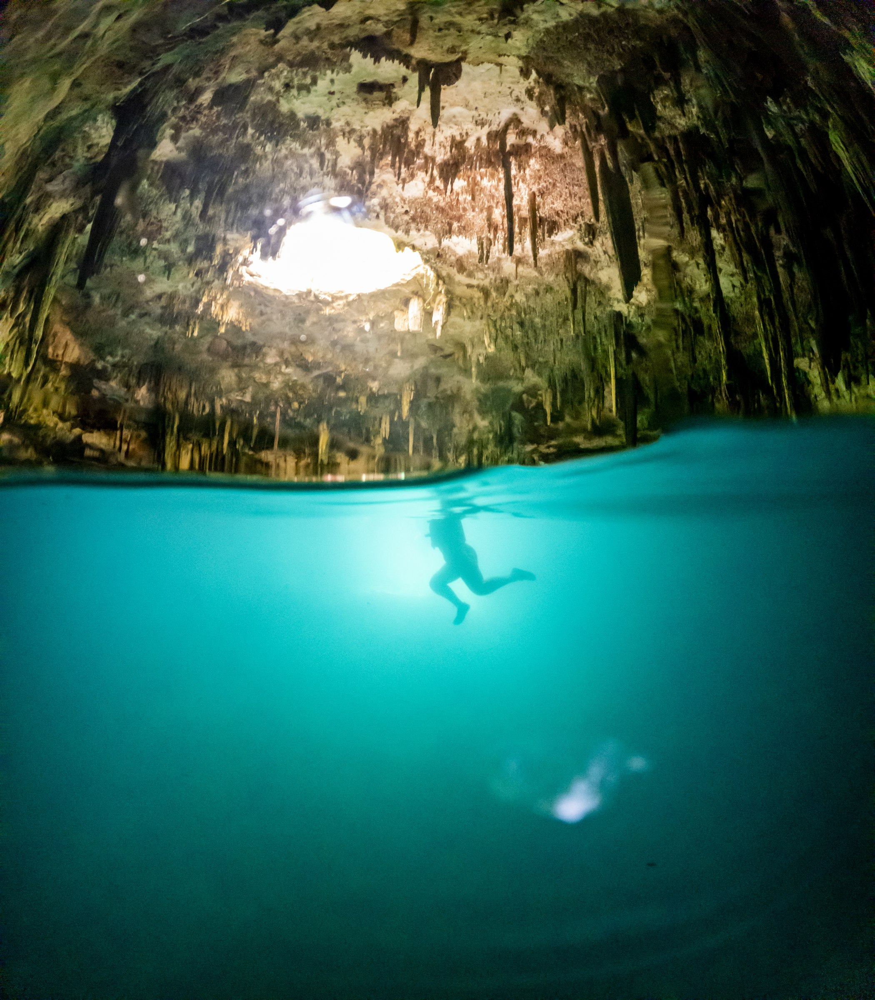
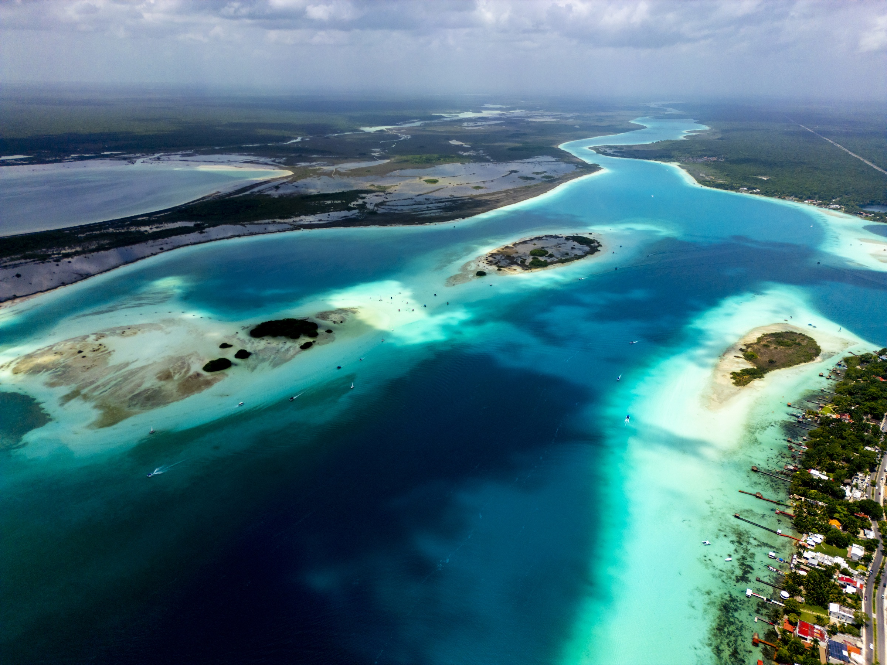
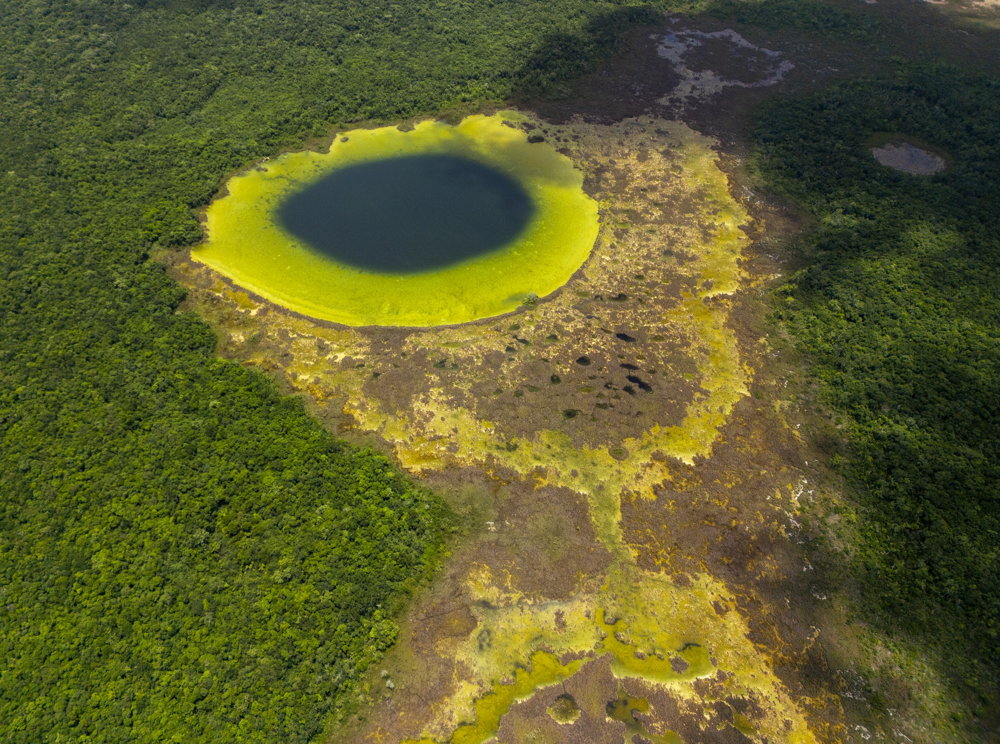
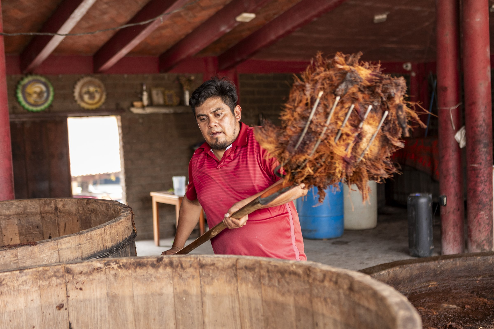
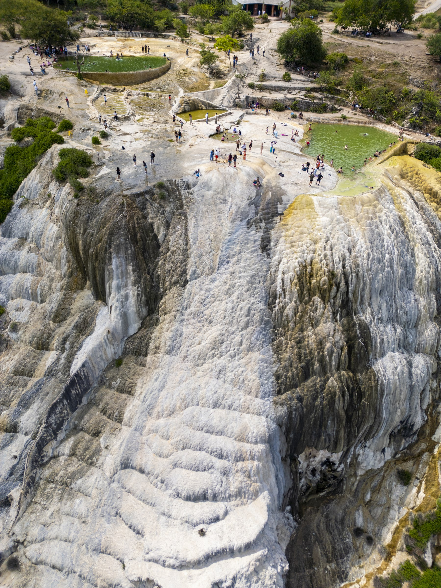

Viajar lejos.
Sentirse acompañado.
Fotografía y vídeo para acercar la asistencia al viajero a las personas que exploran el mundo.
DESCUBRIR LA PROPUESTACuidar el viaje
se puede contar.
Universal Assistance México ofrece asistencia a viajeros y dispone de servicios digitales y un canal para agencias.
Propongo crear una campaña visual que conecte las experiencias de viaje con el respaldo humano y digital de la marca. Empezaríamos definiendo junto a vuestro equipo los públicos y mercados prioritarios.
Fotografía y vídeo para que vuestro equipo los use en su comunicación o para desarrollar juntos una campaña completa.

Cada viajero tiene
su propia forma de viajar.
Una producción que reúna familias, viajes de aventura y escapadas, mostrando los lugares, las personas y el acompañamiento que hace posible disfrutar del viaje.
EXPLORAR LA PROPUESTAUna propuesta.
Distintas formas de contarla.
Ideas iniciales para adaptar con vuestro equipo a las necesidades de Universal Assistance y de sus agencias colaboradoras.
Momentos reales de viaje +
Fotografía y vídeo de destinos, experiencias y viajeros: imágenes de campaña para web, redes y comunicación comercial, diseñadas según los mercados que queráis impulsar.
El equipo que acompaña +
Retratos y escenas del trabajo de vuestros profesionales, si desean participar, para presentar el lado humano de la asistencia.
Herramientas en contexto +
Crear escenas que expliquen el uso de la aplicación o la relación con agencias, coordinadas con vuestro equipo para respetar las condiciones de cada servicio.
Una campaña adaptada +
Podemos producir fotografía y vídeo para que vuestra agencia los incorpore a sus acciones, o desarrollar juntos el concepto y las piezas de una campaña según vuestro briefing.



Contenido hecho
para vuestro equipo.
Producción visual
Imágenes originales para campañas de marca, web y comunicación con agencias, creadas para los públicos y destinos que elijáis.
Campaña completa
Desarrollo creativo y producción junto a vuestro equipo, con colaboradores locales cuando el proyecto lo requiera.
Alcance, localizaciones y licencia de uso a acordar según el proyecto. Juan conserva la autoría y la propiedad del material.

Conocer el viaje
desde dentro.
Soy Juan Aizpuru, fotógrafo y realizador con base en Bilbao. He vivido diez años en Suiza y trabajo con un equipo profesional en proyectos de viajes, naturaleza y deporte.
Las imágenes de esta página son de mi archivo y muestran mi estilo. La producción para Universal Assistance se definiría con vuestro equipo.
VER MI TRABAJO¿Hablamos de lo que
podemos crear juntos?
Me gustaría conocer vuestras prioridades y presentaros ideas para viajeros y agencias en México y otros mercados de vuestro interés.
HABLEMOS DEL PROYECTO